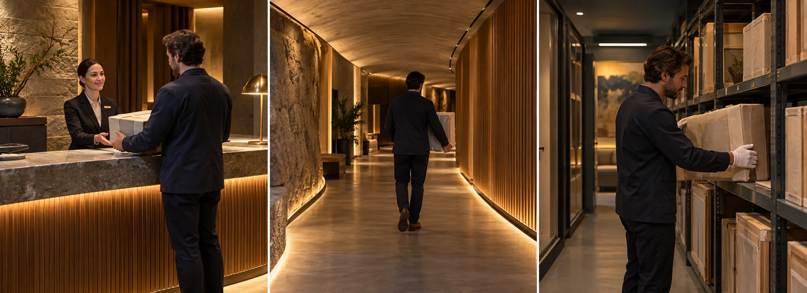

F15 · 고급 · FPV
지하 공간의 프리미엄 인상
좁은 통로의 속도감보다 직원의 응대·동선·보관 상태를 연결해 서비스의 가치를 보여준다.
그림에서 확인할 세 가지기능 공간에 이용자의 여정을 부여한다
1컨시어지의 응대
첫 화면에서 직원의 자세와 안내할 방향을 본다. 비어 있는 지하 공간이 아니라 이용자를 맞는 서비스라는 의미를 만든다.
2정리된 통로
가운데 화면은 벽과 문이 반복되는 길을 보여준다. 통로의 폭과 끝의 방향이 읽혀야 공간의 질서가 단순 반복보다 먼저 느껴진다.
3물품을 다루는 태도
마지막 화면의 작품과 포장된 물품이 어떻게 배치되어 있는지 본다. 물건의 종류보다 주변 여유와 정돈이 관리의 인상을 만든다.
촬영 설계
촬영을 이렇게 설계한다
서비스의 시작을 둔다
학습 장면에서는 컨시어지의 안내나 물품 접수로 방문을 시작한다. 공간만 비어 있는 상태로 보여주기보다 누가 어떤 도움을 제공하는지 드러내어 뒤의 보관 공간과 관계를 만든다.
통로에서 방향을 유지한다
비슷한 문이 반복되는 복도에서는 관객이 어느 쪽으로 가는지 놓치기 쉽다. 학습안은 이동 방향과 다음 입구를 분명히 남겨 복잡한 지하 구조가 혼란으로 읽히지 않도록 구성한다.
보관 상태를 보여준다
마지막에는 물품과 주변 여유 공간, 정돈 상태가 읽히는 구도를 고른다. 빠르게 지나가면서 넓이만 강조하기보다 서비스가 약속하는 관리 상태를 화면으로 판단할 시간을 남긴다.
제작자는 Mayfair 호텔 아래 보관 시설에서 이동 공간과 컨시어지 서비스를 연속 촬영했다고 소개한다.
원본 영상Self Storage Concierge
1. 사람의 역할
직원이 단순히 배경에 서 있는지 실제 안내 관계를 만드는지 본다. 서비스의 주체가 보이면 다음 공간의 용도도 이해하기 쉽다.
2. 반복 속 방향
같은 형태의 문이 이어져도 목적지가 읽히는지 본다. 비슷한 공간일수록 진행 방향을 알려주는 구도 단서가 필요하다.
3. 정돈의 근거
물품 간 간격과 주변 정리 상태를 본다. 고급스럽다는 색감보다 어떤 관리 상태를 실제 화면이 보여주는지 구분한다.
재생이 제한되면 원본 영상 새 창을 이용하세요.
제작진 설명 · 한국어 요약 번역
지하 공간에서 서비스의 인상을 표현하다
투어 구성
Whyld는 Mayfair의 Biltmore Hotel 아래 시설을 안내 투어처럼 보이도록 설계했다고 설명한다.
카메라는 시설 관리자를 따라 복도를 지나 새로 열리는 보관 공간으로 이동한다.
짐을 싣는 사람 같은 다른 활동도 경로에 넣어 시설이 실제로 운영되는 느낌을 냈다.
기체와 과제
Moonshot의 작은 크기와 지구력 덕에 사람 곁에서 긴 연속 촬영이 가능했다고 한다.
좁은 지하 공간, 정밀한 간격, 신호 관리가 과제였다.
병행 제작
같은 시설의 인터랙티브 가상 투어도 함께 제작했다.
Kling 프롬프트단문 인과 체인 · 16:9
내가 직접 만들어 본다
컨시어지의 응대가 원인이 되어 카메라가 통로로 들어가고, 정돈된 보관 상태를 판단할 시간을 남긴다.
같은 인과를 FPV 시점의 속도, 근접 통과, 회전으로 표현한다.
- S01영상은 하나의 연속 쇼트다.
- S02화면에 드론 기체는 나오지 않는다.
- S03지하 보관 시설 입구에 컨시어지가 서 있다.
- S04처음 10초 동안 컨시어지가 방문객에게 손으로 통로를 안내한다.
- S05카메라는 그 손짓을 따라 통로로 들어선다.
- S06안내가 먼저 있었기 때문에 지하가 서비스 공간으로 보인다.
- S07다음 10초 동안 카메라는 같은 문이 이어진 복도를 곧게 나아간다.
- S08복도 끝에 다음 입구가 보이므로 방향이 분명하다.
- S09카메라는 복도 끝의 열린 보관실로 꺾어 들어간다.
- S10마지막 10초 동안 보관실 안에는 포장된 작품이 정돈되어 있다.
- S11카메라가 속도를 줄이자 물품 주변의 여유 공간이 보인다.
- S12카메라는 작품 앞에서 안정되게 멈춘다.
[네거티브]
- 컷이나 장면 전환으로 쇼트가 끊기는 것 금지
- 화면에 드론 기체가 나타나는 것 금지
- 컨시어지가 없는 텅 빈 지하 공간이 나오는 것 금지
- 컨시어지가 방문객을 외면하거나 뒤돌아 있는 것 금지
- 카메라가 손짓과 다른 방향으로 들어가는 것 금지
- 안내 없이 곧바로 보관 공간만 빠르게 보이는 것 금지
- 복도가 미로처럼 꺾여 방향을 잃게 하는 것 금지
- 복도 끝 입구가 보이지 않아 목적지가 모호한 것 금지
- 카메라가 보관실을 지나쳐 복도 끝으로 계속 가는 것 금지
- 속도를 줄이지 않아 물품이 흐릿하게 지나가는 것 금지
- 물품이 어질러져 있거나 먼지투성이로 보이는 것 금지
- 카메라가 급정지하며 작품에 가까이 부딪히는 것 금지
- S01영상은 FPV 시점의 하나의 연속 쇼트다.
- S02화면에 드론 기체는 나오지 않는다.
- S03지하 보관 시설 입구에서 컨시어지가 통로를 가리킨다.
- S04처음 10초 동안 카메라는 컨시어지의 어깨 옆을 스치며 지나간다.
- S05손짓이 방향을 알려주기 때문에 카메라는 통로로 쏟아지듯 들어간다.
- S06카메라는 같은 문이 이어진 복도를 질주한다.
- S07복도 끝에 다음 입구가 보이므로 카메라는 점점 속도를 높인다.
- S08다음 10초 동안 카메라는 천장 배관 아래를 낮게 스치며 날아간다.
- S09카메라는 카트와 벽 사이의 좁은 틈을 통과한다.
- S10카메라가 옆으로 기울며 복도 바닥이 벽으로 서 올라온다.
- S11기울기가 커지자 천장이 발밑으로 오고 문들이 머리 위로 뒤집힌다.
- S12한 바퀴를 돌아 바닥이 다시 아래로 돌아온다.
- S13열린 보관실이 보이자 카메라는 그쪽으로 꺾어 파고든다.
- S14마지막 10초 동안 카메라는 보관실 안에서 급감속한다.
- S15포장된 작품들 주변의 여유 공간이 또렷하게 보인다.
- S16카메라는 작품 바로 앞에서 멈춘다.
[네거티브]
- FPV가 아닌 느리고 평평한 일반 촬영처럼 보이는 것 금지
- 화면에 드론 기체가 나타나는 것 금지
- 컨시어지 없이 빈 지하 입구만 나오는 것 금지
- 카메라가 컨시어지를 멀리서 보기만 하는 것 금지
- 손짓과 다른 방향으로 카메라가 가는 것 금지
- 속도가 느려져 일반 항공 샷처럼 보이는 것 금지
- 다음 입구가 안 보여 방향을 잃는 것 금지
- 천장과 멀리 떨어져 배관이 안 스치는 것 금지
- 틈을 지나지 않고 카트 위로 넘어가는 것 금지
- 카메라가 기울지 않고 수평선이 그대로인 것 금지
- 뒤집힘 없이 살짝 기울기만 하다 끝나는 것 금지
- 한 바퀴를 못 돌고 반쯤 돌다 멈추는 것 금지
- 열린 보관실을 지나쳐 복도 끝까지 가는 것 금지
- 보관실 안에서도 빠르게 흘러 상태가 안 보이는 것 금지
- 작품이 빽빽하거나 어지럽게 쌓여 보이는 것 금지
- 작품 앞에서 멈추지 않고 흔들리는 것 금지
결과에서 볼 것
- 응대가 먼저 보이고 카메라가 따라 들어갔는가
- 복도에서 다음 입구와 방향이 분명했는가
- 보관 상태를 판단할 시간이 있었는가
- 첫 동작부터 카메라가 빠르게 움직였는가
- 사람이나 물체 곁을 가까이 스치며 지나갔는가
- 회전과 급감속이 화면에 보였는가